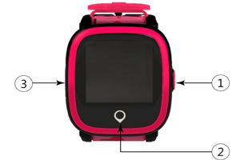

HT-770儿童智能手表使用手册
封面

①多功能按键：开关机/SOS键、挂电话键
长按开机；开机后，设备未能正常上线（包括未插入SIM卡、SIM卡无通信）时，长按开关机/SOS键时，设备会关机； 设备正常上线时，长按5s后，执行SOS报警功能； 短按挂电话。
②电话接听键，触摸按键
③SIM卡盖
绑定儿童手表
1、请使用中国移动或中国联通标准Micro-SIM卡。卸下SIM卡盖上的螺丝，放入Micro-SIM卡，正确安装完成后，长按开关机键开机。（注意：螺丝上的防水胶圈和SIM卡槽里的胶圈须安装到位且无损坏，否则会影响防水性能。）
2、启动APP ：航通守护者。
3、按照APP指引注册新的用户或登录已有账号，选择“儿童手表”→选择“HT-770”。
4、选择" HT-770"后，请扫描手表后盖上的二维码或手动输入设备的ID号进行绑定。
5、绑定后，即可通过APP对手表进行相关的设置或交互。
功能及使用说明介绍
1、手表时间校正方法：在APP设置项“手表时区和语言”中，选择所在地对应时区，并提交即可。
2、电话本功能：在手机APP添加联系人，保存后，手表电话本会自动同步更新，电话本中的前3位默认为SOS紧急联系人。
3、SOS功能：设备正常上线时，长按开关机/SOS键5s后，执行SOS报警功能，无人接听时，手表会循环两轮拨打求救电话给3位紧急联系人；若3位紧急联系人任一位接听则停止循环拨打;同时发送求助短信给3位紧急联系人，以便快速获得援助。
4、通话功能：手表进入电话本中，选择联系人，点击“拨打键”，电话播出并接通后，便可双向通话。
5、计步功能：可以在手表中查看宝贝当日运动步数。
6、语言设置功能：在APP设置项“手表时区和语言”中，在语言项列表中，选择所在所需语言，并提交即可。
7、通过APP，还可以进行手表上课禁用设置、手表闹铃设置、找手表、远程关机等功能操作。
充电介绍
设备支持主流手机适配器，为环保考虑，所以未配置电源适配器。请选择合适的适配器给设备充电即可。
配件
1.充电线；
2.使用说明书
3.螺丝刀
常见问题
1.为什么无法开机？
答：可能由于运输时间过长，电池电量耗尽，请连接充电器进行充电后，再开机。
2.无法充电？
答：请确认充电线是否与机身接触良好。
3.二维码扫描失败？
答：调整手机摄像头与二维码之间的距离，或者在光线充足的地方重新扫描。
4.插入SIM卡，设备正常上线使用时，无法通过设备的开关机/SOS键关机
答：设备正常上线时，请通过APP进行关机；设备未正常上线（包括未插入SIM卡或SIM卡无通信费）或当前通信信号很差时，才可通过设备的开机/SOS键关机。
5.为什么长按开机/SOS键时，设备有时会关机？
答：设备未正常上线（包括未插入SIM卡或SIM卡无通信费）或当前通信信号很差时，长按开关机/SOS键时，设备会关机。
注意事项
1、请不要将产品长时间浸泡在水中；
2、请将产品远离火源、高温高热等极端环境；
售后服务
请咨询当地的业务人员或者我司售后服务中心。
联系我们
有任何问题或建议，欢迎您随时联系我们。
中国大陆
官方微信：航通守护者
客服QQ:3106893070
服务热线：0755-8601 8738
中国香港
服务热线：+852-26273380
邮箱：cs-liteguardian@castelbeidou.com
海外
邮箱: sales@castelbds.com
公司网页:www.lite-guardian.com
服务热线:+8675586018742